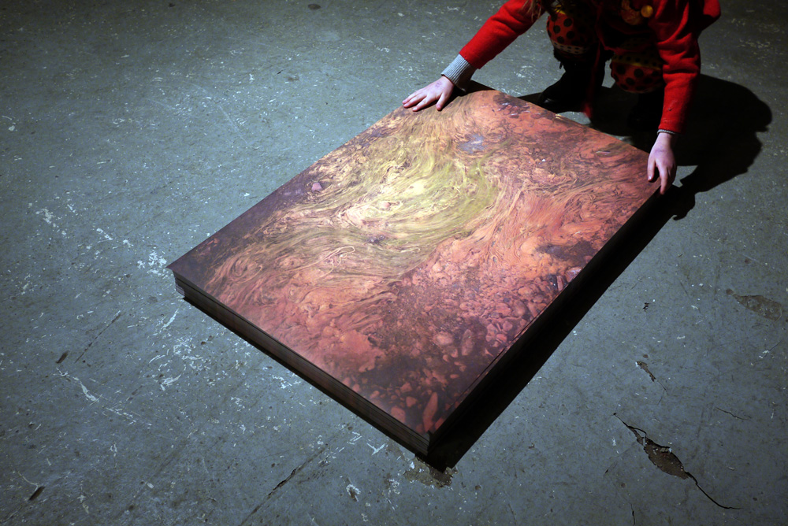
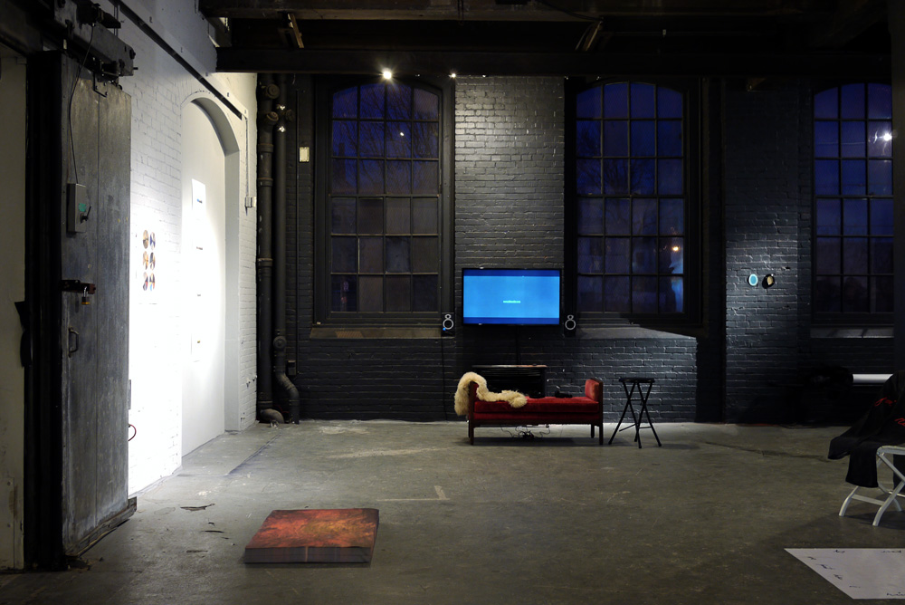
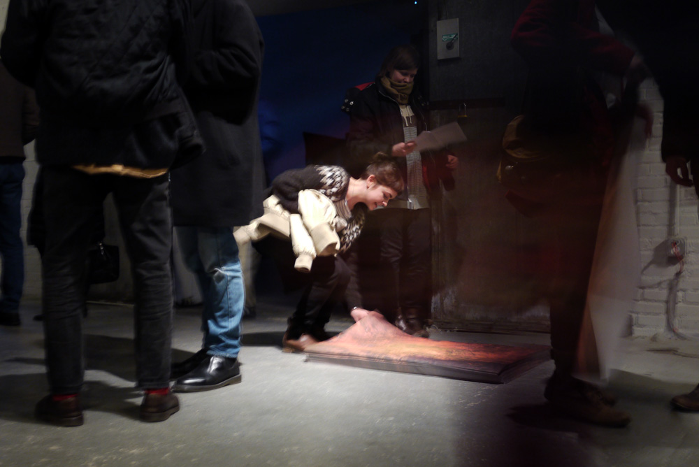

Untitled (This one was for outlaws) (2013)

Untitled (This one was for the outlaws) consists of a single image of a rust-stained stream in Skagaströnd, Iceland. (This image also appears on the inside cover of 530.) Untitled was installed as a stack of 530 sheets in “Due North,” a group show at Crane Arts, Philadelphia, January 9–25, 2014. The sheets were distributed to visitors during the opening.
530 stacked sheets, offset-printed on one side
24 in. x 36 in. x 6 in.


